N离散变化，过threshold后变系数n。小
AP is averaged over all categories. Traditionally, this is called “mean average precision” (mAP). We make no distinction between AP and mAP (and likewise AR and mAR) and assume the difference is clear from context.
mAP (mean Average Precision) for Object Detection - Jonathan Hui - Medium
anchor-free
两个部分： 1) 检测角网络，左上+右下 2) 嵌入网络，用于匹配角点
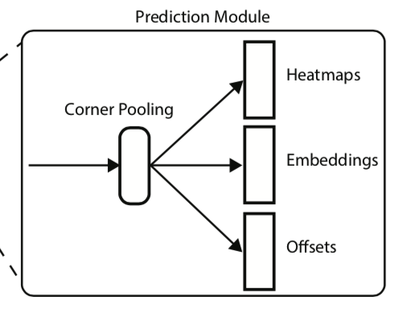
检测corner网络：提特征之后，经过corner pooling产生每个类别的左上角和右下角的heat map。为正负样本匹配，只惩罚GT一定范围外的预测点（通过IoU threshold限制radius）
计算嵌入embed网络：用于匹配同框的左上右下。损失函数：同框左上和右下接近（variance小），不同框的平均embed距离大。
Corner pooling ：解决角点特征少，取一条线上的最大值pooling
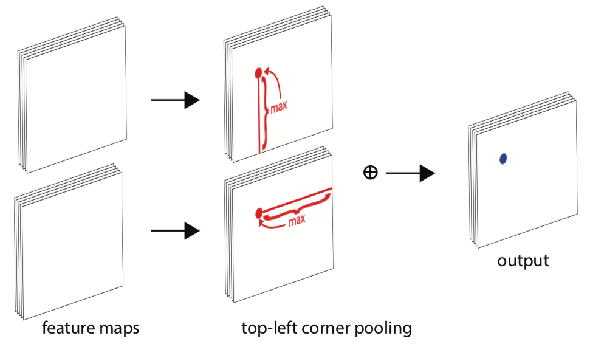
Hourglass network：提特征
two stage得到预测框之后采用RoI pooling/align提取检测框内部的信息，只有内部信息(approx.)的特征再进行一次框定和分类（refine步骤）；而一阶段的方法在提取到特征之后分成两支进行框定和分类，没有对近似的只包含框内物体的特征(局部特征)进行再一次提取，所以精度较差
anchor-free
CornerNet只用到边缘的特征信息，没有用到内部的特征信息（造成不止对物体的边缘敏感，也对背景的边缘敏感）。内部信息对于决定两个keypoint是否是同一个框有帮助。
CenterNet预测三元组：左上，右下，中心
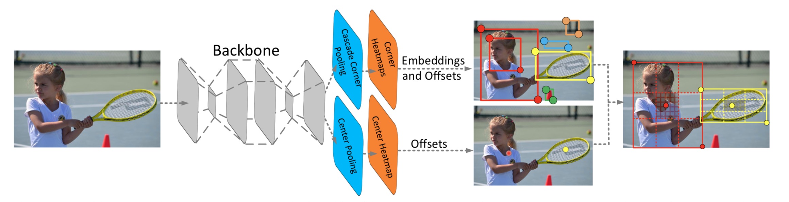
二分支：产生corner点并match形成框；产生center点。如果center点在框的central region，计算框，否则删除
central region 确定判定的中心区域的大小：大框偏小，小框偏大，整体线性
N离散变化，过threshold后变系数n。小threshold
大，3
5
center pooling 用在预测中心点时，增加中心点的recognizable特征
例如找leftmost的（即把horizontal最大值传到最左边），每个点看自己到最右边的最大值，不断传，到最左可获得整条横线最大；找topmost（把vertical最大值传到最上面），每个点看自己到最下，不断传，到最上则可获得整条线最大
模块&示意图
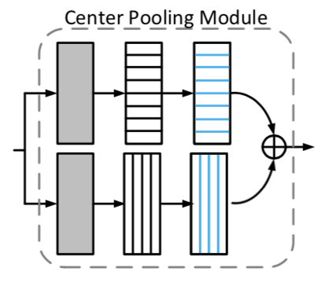
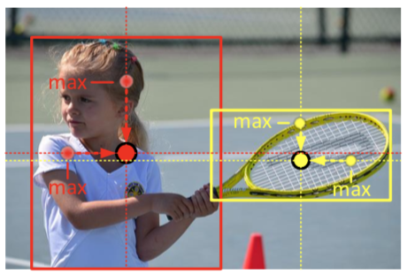
输出map表示是否为center点，然后找横向和纵向最大值
cascade corner pooling 增加角点的特征，相比corner pooling增加内部，使其不对边缘敏感
沿着边缘找边缘最大值，再从边缘最大值的位置 向内找内部最大值 ，最后两个最大值相加
模块&示意图
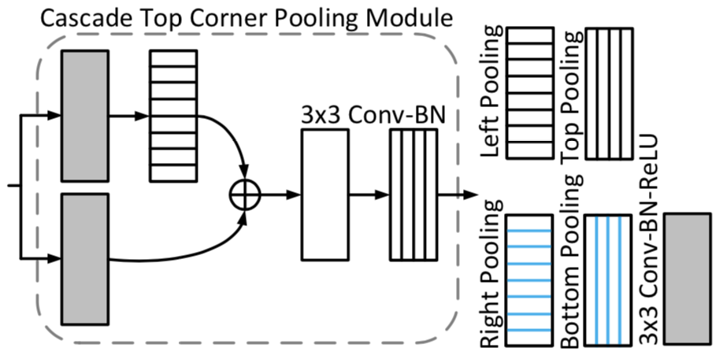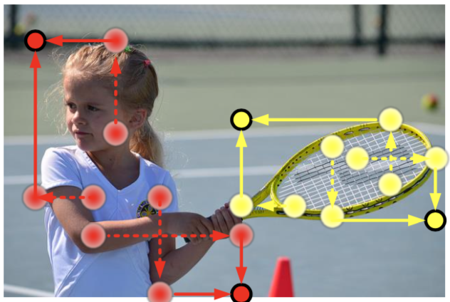
Q: how to classification?
Need RoI align?
anchor-free 消除anchor，减少IoU的计算和GT框的匹配。可以代替二阶段的RPN
按照像素进行预测per-pixel prediction，预测每一个像素点的四个维度的框 (Left, Top, Right, Bottom)👇
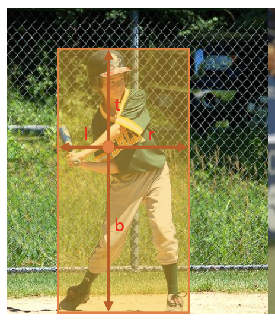
对于特征图上每一个点，对应一个原图上的框。直接把特征图上的像素点看成训练样本而不是在点上铺不同长宽比和大小的anchor框
对于一个点落在多个GT框中（ambiguous samples）选择最小的bbox作为target。同时通过multi-level prediction来减少数量。👇
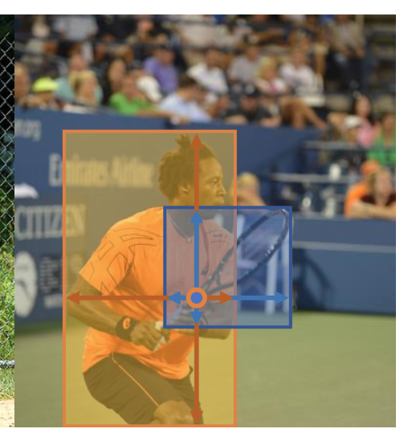👆which bbox this location should regress？
FCOS可以利用尽可能多的样本（特征图上的点形成的框）而不只是IoU足够大的anchor 来进行训练。每个点都去学习对框的预测，多个点共同产生多个类似的框，然后NMS选择最大的
对于ambiguous samples，采用多尺度特征图，每层限制4D vec中最大值的大小（限制每层特征图产生的bbox的大小），满足。对于同一个点上多个框，因限制，所以在不同尺度特征图上构成的框进行regress，一个feature map上一个点只负责固定尺度的框回归。如果还出现重复，则选择尺寸最小
防止远离物体中心的点产生质量差的框，center-loss。
使左和右，上和下的长度尽可能相等。测试时centerness-weighted classification confidence，抑制偏远框👇
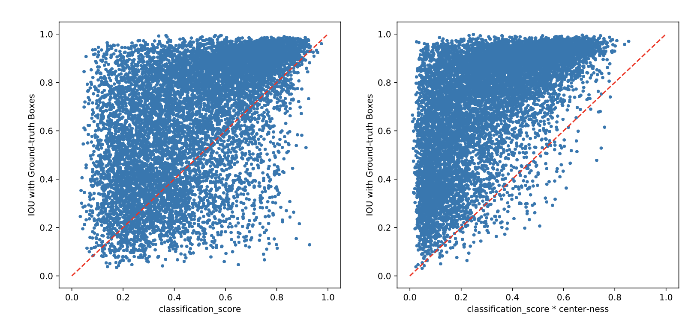
网络结构👇
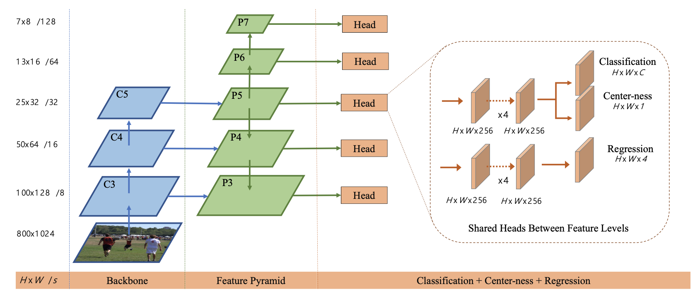
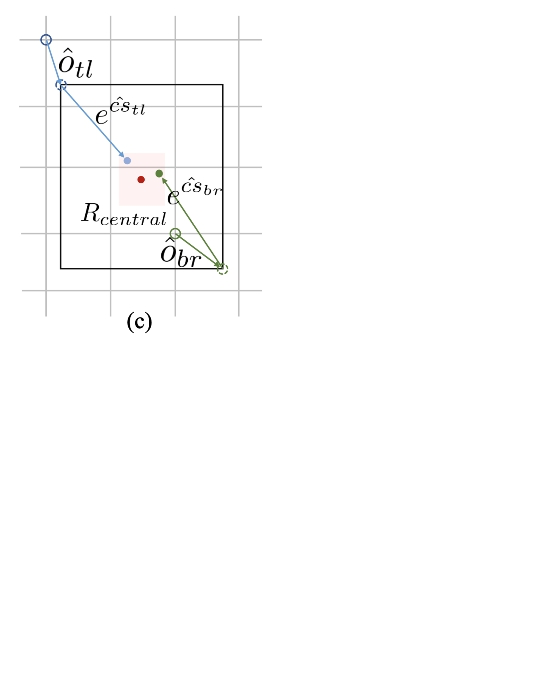
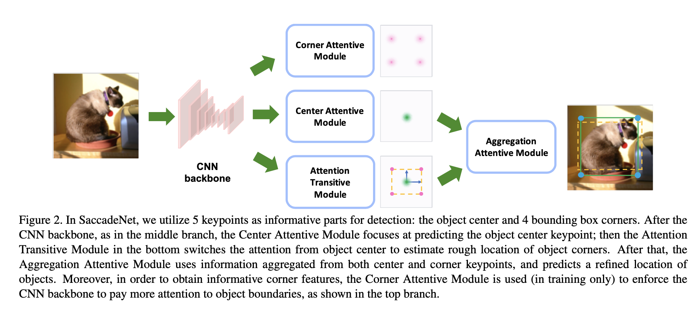
同时预测中心Center Attentive Module和角点Attention Transitive Module，得到粗框，使用Aggregation Attentive Module双线性插值重新采样feature map，得到精细框，轻量级边框细化。Corner Attentive Module辅助训练。
Center-AM距离惩罚训练，采用Gaussian heat map作为GT
相比CornerNet增加了中心特征，相比FCOS增加了边缘特征，相比CenterNet加速
参考https://zhuanlan.zhihu.com/p/37998710
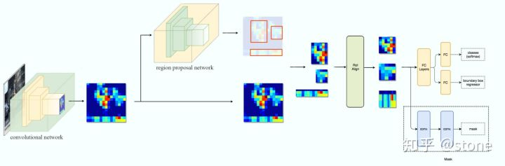
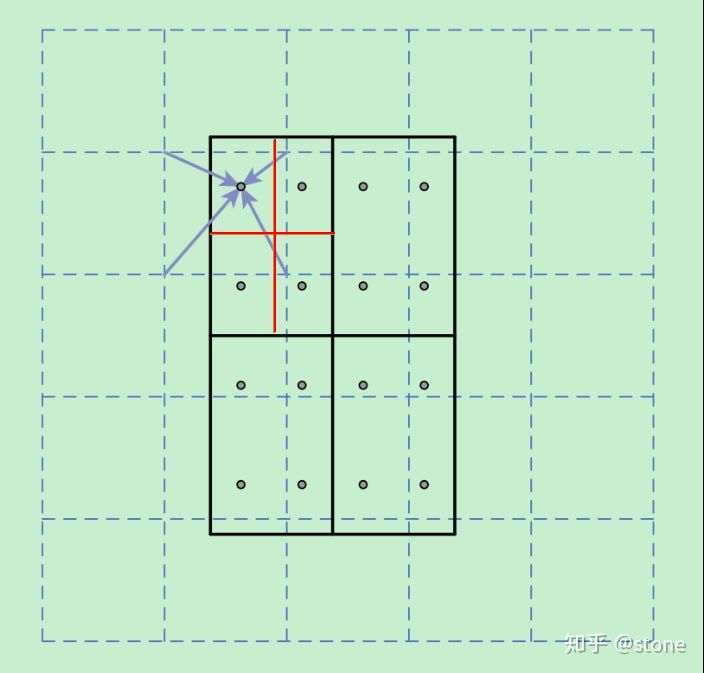
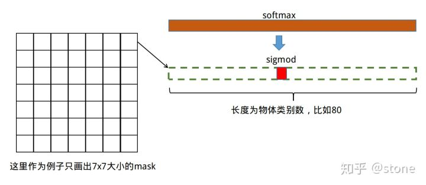 👆loss计算时w*h*c的mask输出，只计算分类分支预测的类别对应channel的sigmod输出作为损失「语义mask预测与分类预测解耦」
light-weight
包含两个部分 spatial contraction-expansion 和 channel expansion-contraction ，独立作用在特征图的 orthogonal dimension。前者通过减少特征图大小减少计算量，后者通过提升informative feature提升性能
mobilenet通过分离成point-wise和depth-wise来分别不变尺寸变通道数和不变通道数变尺寸(up/down sampling) so called depthwise separable conv
shufflenet通过group conv减少通道上的计算量，channel-shuffle来增加不同通道之间的连接
👆previous work focus on channel transformation, introduce spatial feature dim(size)
尺度减少，aspect ratio减少
Shallow feature map only for small
Deep ONLY large
低秩简化
PointRend
特征融合
cascade
Single anchor per location + multi-stage refinement
一次回归不到（距离太远），多次回归
回归多次后anchor点处的特征和移动anchor所在位置特征不匹配
deformable conv
匹配的anchor位置不变(还是最初始点对应的anchor)，但是提取特征的位置改变👇👇

predefined anchor在GT和anchor对齐时限制性能/偏差，(#toread RoIPool RoIAlign)
Iterative RPN每次把anchor集合看作新的anchor进行refine，导致每次迭代后anchor位置和形状发生变化，anchor和表示anchor特征不匹配「 anchor中心点的特征(即表示anchor的特征)不发生变化，但是anchor的位置发生变化 ，mismatch」
👆使用deformable conv解决，but no constraint to enforce 🙅♂️
卷积采样的时候增加offset fieldoffset = center offset + shape offset中心的偏移和形状偏移(由anchor形状和kernel决定)
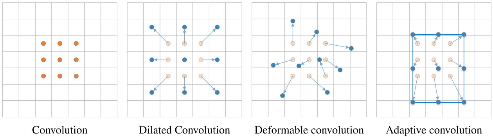
👆对比deformable conv：偏移量由anchor和kernel决定，非网络学习➡️anchor和feature对齐
每个位置只有一个anchor，然后迭代refine
Determining whether a training sample is pos/neg as the use of anchor/anchor-free is adversarial 两种方法决定正负样本的方法不同
👆即anchor-free的决定方式宽松/数量多，anchor-based标准严格/数量少
Stage 1: anchor-free➡️更多正样本「解决正负样本不匹配」
Stage 2: amchor-based➡️严格，数量减少，IoU高anchor-free指FCOS，中心点在物体内为pos anchoranchor-based指Faster RCNN，IoU threshold
前一个阶段的输出bridge到后一个阶段
由anchor计算出offset o，再和feature x输入regressor计算新的anchor ( 就是anchor回归的目标 eg.
)
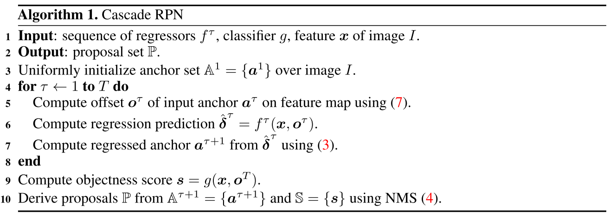
为检测任务设计backbone
现有的ImageNet backbone： 1. 网络stage需要增加，且未在imagenet训过 2. down-sample和stride损失空间信息，大目标边界模糊 3. 小目标「空间分辨率低」
Scale variation
多分支网络，分支结构相同权重共享，每个分支不同的感受野对应检测不同尺度范围的物体
不同感受野使用dilated_conv实现👉参数相同
权重共享：减少参数量，inference时只选择一个主分支
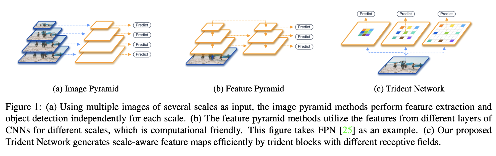
Image Pyramid (Multi-scale training&testing): time-consuming
Feature Pyramid: use different params to predict different scale (not uniform)
trident block👇
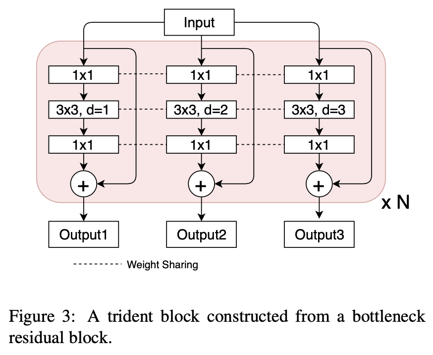Scale-aware Training Scheme：每个branch只对长宽在一定范围的proposal进行训练「一张图片使用不同branch(不同dilate rate)训练不同尺度的proposal」
其他参数相同(make sense?)
预测：计算每个分支的预测输出，filter out掉超过尺寸范围的box TridentNet Fast：预测只采用单分支中间分支预测，得益于三分支权重共享，效果接近
解决多尺度问题, 不构建feature pyramid, 多尺度训练策略, 尺寸适应网络
Scale Invariant: RCNN将proposal缩放到同一个尺度，检测网络只需要学习一种尺度的检测。而为了适应不同尺度，多尺度训练的Faster RCNN对整个图片进行放缩，proposal也放大缩小，检测网络学习适应多种尺度。 通过网络capacity记忆不同scale的物体 ，浪费capacity
Process context regions around GT instances(chips) at appropriate scale
截取固定尺寸的chip(eg3x3, 5x5, 7x7)对应不同尺度，然后resize到相同大小(low-res)去训练
小目标zoom-in，大目标zoom-out
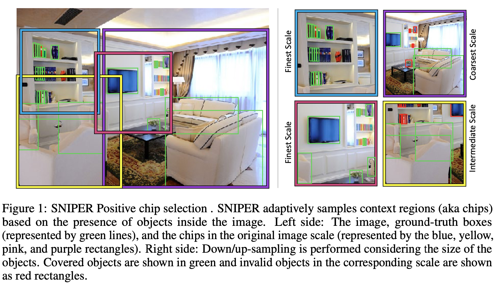
👆chip从最小的cover某个GT box开始，直到最多的box被这个chip cover到
「chip尺寸不变，围绕cover这个GTbox转，直到最大化cover的box数量」
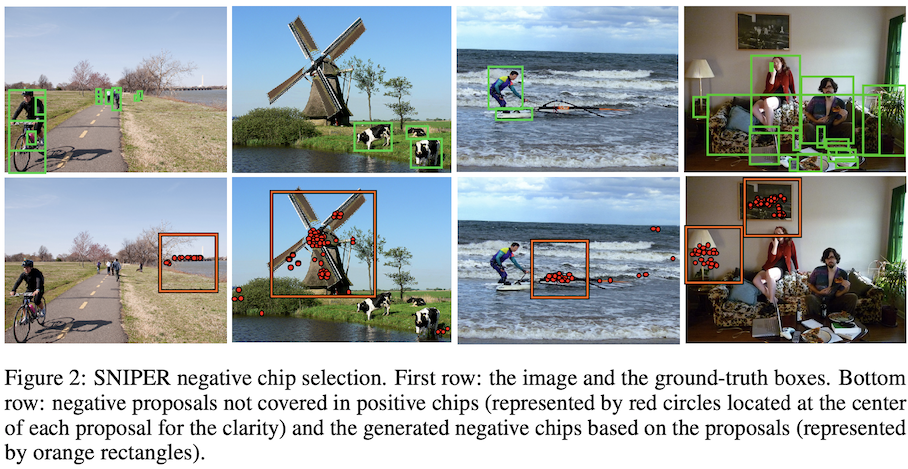👆只有pos chips会导致网络只对GT附近小范围的图片训练 iconic，缺乏 背景 。增加难样本作为neg chips
Metrics:
训练时可控制neg chip数量，类似OHEM
分辨率和准确率关系可能不大，过多context可能不必要
Ref: 目标检测-SNIPER-Efficient Multi-Scale Training-论文笔记 | arleyzhang
小目标，粘贴构造训练样本
小目标数据集中分布不均匀(41.4%的小目标只出现在52.3%的图片中)，小目标在训练过程中贡献的loss低，学不好
把图片缩小，拼接在一起（和SNIPER切割相反）
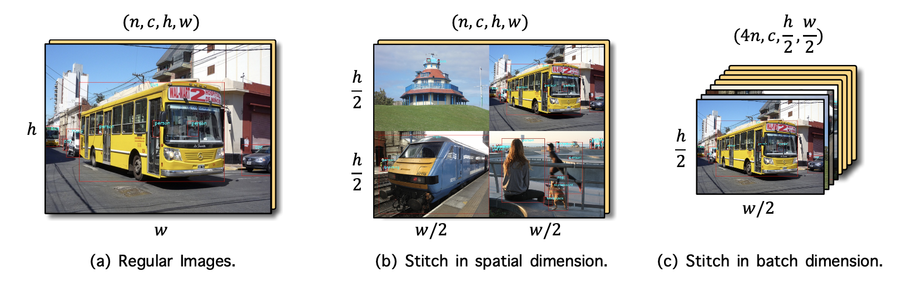
把大物体和中物体都变成小物体，增加小尺度的分布
小目标：检测时放大❌，训练时缩小✅
loss作为反馈信号，小目标产生loss不足()则下个iter采用stitch，缺啥补啥
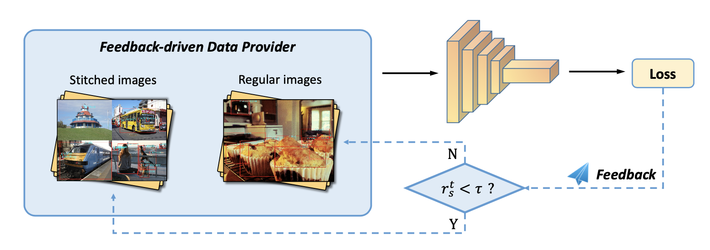
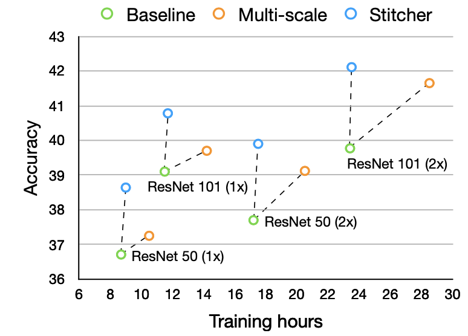
处理过程中保持高分辨率「position-sensitive task」
maintain high-res representation through the whole process
不同于skip connection：高分辨分支平行conv，通过fusion而不是add融合高低分支，多分辨率输出
不同于特征金字塔：高低分辨率平行计算（low-res增加分辨率下conv计算，不是通过high-res一次卷积downsample得到，逐步平行计算增加）
先前网络：encode high low，recover low
high
提出网络：运算时保持高分辨率分支，平行的加入低分辨率分支；multi-res fusion
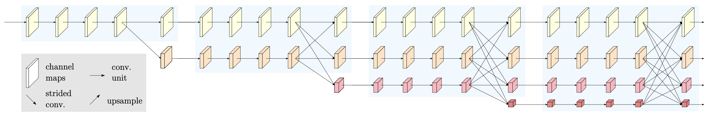👆每个stage 逐步加入一个低分辨率(eg 1/2) 分支，且保持原有分辨率分支
类似 group conv ，通道分别 分辨率分别
每个stage(4个unit/block)交换不同分辨率的信息
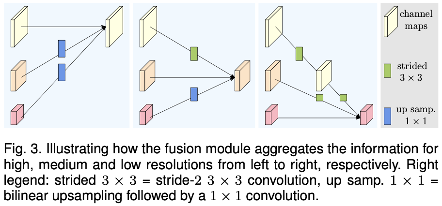👆high low: stride conv; low
high: bilinear upsampling + 1x1 conv
an extra output for lower res output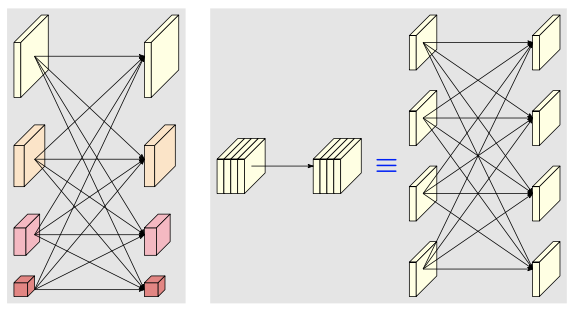👆融合类似FC
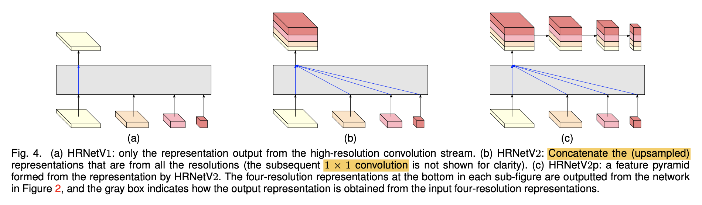(a) 关键点检测 (b) segmentation (c) object detection
更好的anchor，改进产生anchor的过程「非密铺」
anchor与feature: alignment + consistency
两个分支分别对anchor的中心点和长宽进行预测，防止offset偏移过大，anchor和点的feature不对应
采用deformable conv使feature的范围和anchor的形状对应，每个位置anchor形状不同而capture不同的特征「加offset以适应anchor形状」
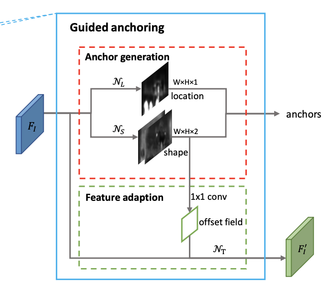
分两步产生anchor「减小同时预测xywh时出现的偏移不对应」
选择高于thresh的location中，概率最高的shape，产生anchor
consistency: 每点对应的anchor长宽不同，所以学习到特征对应区域的长宽也应该不同
基于对应anchor的长宽，改变特征（xy不变，位置branch只预测objectness score）
👆使用deformable convolution实现
训练时anchor和gt box的匹配，训练目标。wh为变量，无法计算IoU
方法：Sample常见的wh组合，计算和GT的IoU，得到vIoU👆，作为anchor和gt IoU的估计，之后采用常见anchor分配方法确定训练目标
由于生成的anchor更好，pos样本数量更多。训练样本分布符合proposal分布
设置 更高正负样本比例 ，同时 更少样本 数量，即 更高IoU threshold
解决密集 _相邻_ 物体的检测框重叠IoU大，可能在NMS过程中 误删
密集物体检测有提升
按照置信度排序，选择最大的box i保留。其余box中，与I的IoU>threshold的删除(置信度置为0)。再从剩下box选择最大保留，重复
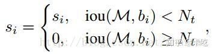
重叠IoU越大，置信度下降越多
置信度置为0变为更新IoU>threshold框的置信度
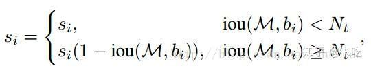
或
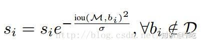
Ref: NMS与soft NMS - 知乎
密集场景下NMS误删
通过预测crowd程度动态选择threshold
密集位置提高IoU阈值保留临近框，稀疏位置降低IoU阈值删除冗余框
对于每个物体定义object density
阈值计算过程
NMS过程
测试时density通过网络density subnet预测，objectness map + bbox预测concat作为输入，5x5卷积(临近物体的信息)
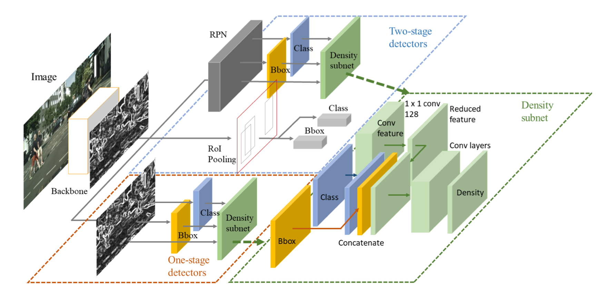
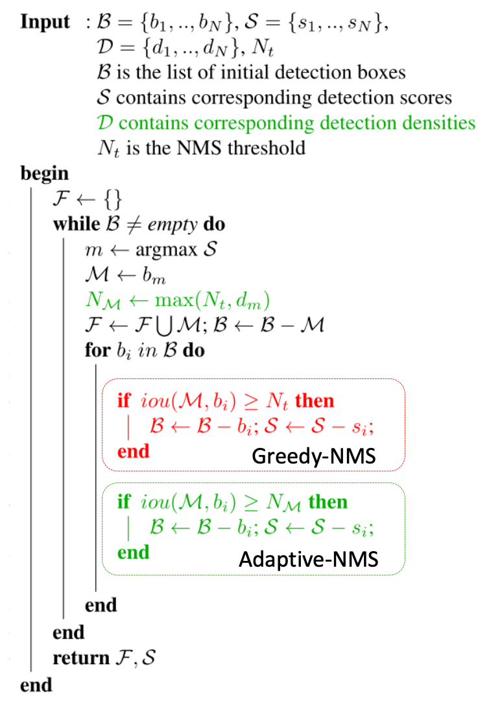
在cityperson和crowdhuman密集数据集效果好
Ref: https://www.starlg.cn/2019/05/20/Adaptive-NMS/
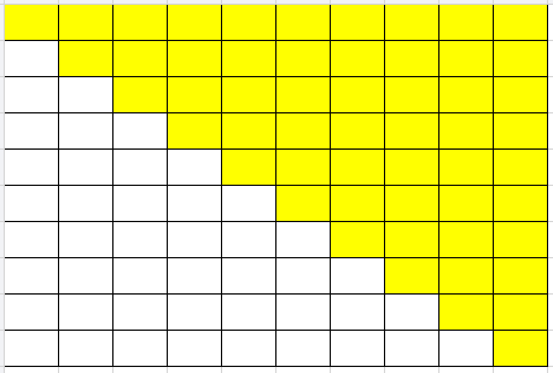
按照conf顺序构建IoU矩阵，转为上三角。对，如果
，则去掉
，速度快
问题：没有去掉时把之后的
失效，「横向传播」，可能多删除框。
被删除后，之后的框和
的IoU仍被考虑计算
Enhancing Geometric Factors in Model Learning and Inference for Object Detection and Instance Segmentation
改进Fast NMS，增加remove row 的操作
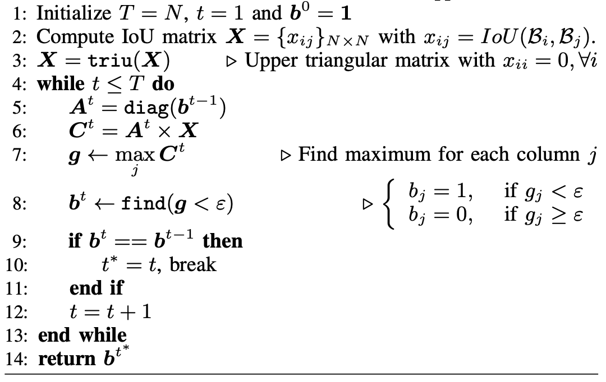
表示
iter的NMS indicator，t次iter时对
进行NMS
表示根据上次NMS结果(indicator)，对已经被supressed的框去掉（i行置0，不考虑
，和i框的IoU不计算）
同
Fast NMS，同
NMS
没有重合的box可以分成多个cluster并行处理
类似Soft NMS中不是直接去除box 「hard」，变成对score进行reweight「soft」，构成Cluster-NMS_S
j和其他box的IoU越大，score降低越多
不同于Soft NMS，只会被 和更高conf的box有大IoU 而受到惩罚，由于是上三角，只计算和更靠前box的IoU
增加同DIoU类似的中心点距离，构成
Cluster-NMS_S+D
Weighted NMS根据IoU和conf加权merge重叠框，输出全新的框「速度慢」
是加权融合后的全新的框，
为重叠框，权重
，weighted combination
conf从高到低，找到IoU>threshold的框，根据IoU进行加权求和，得到融合框；再对其他IoU<threshold的框计算 (https://github.com/sanch7/Weighted-NMS/blob/master/weighted_nms.py)
Cluster-NMS_W:
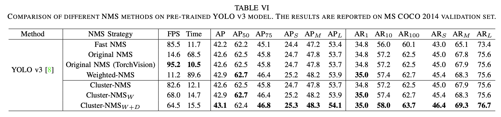
密集重叠场景下，只通过IoU不能判断是否是对同一个物体的预测。增加feature vec 距离判断是否是同一个物体的预测，距离小删除
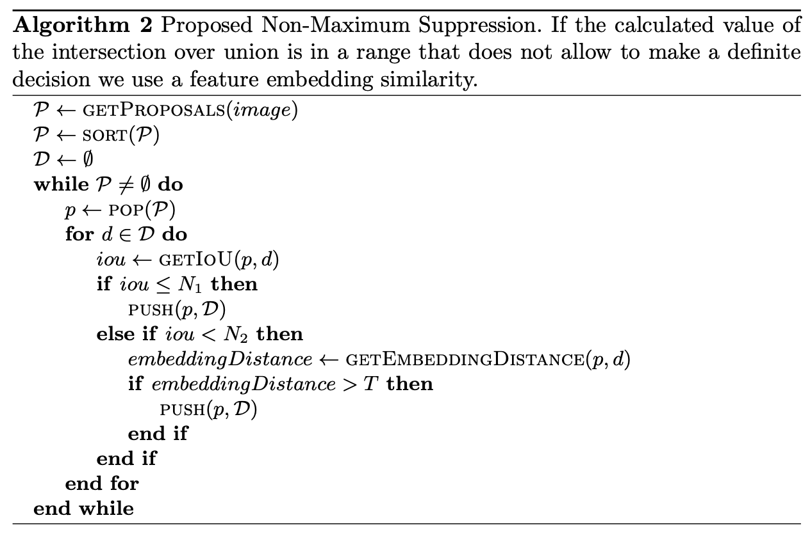
当IoU无法判断时使用embedding判断是否是同一个物体
训练使用Margin Loss:
其中，pairwise loss:
FPN处理不同大小的物体(特征金字塔)
👇本文增加不同长宽比物体的处理 (大小金字塔+aspect ratio金字塔)
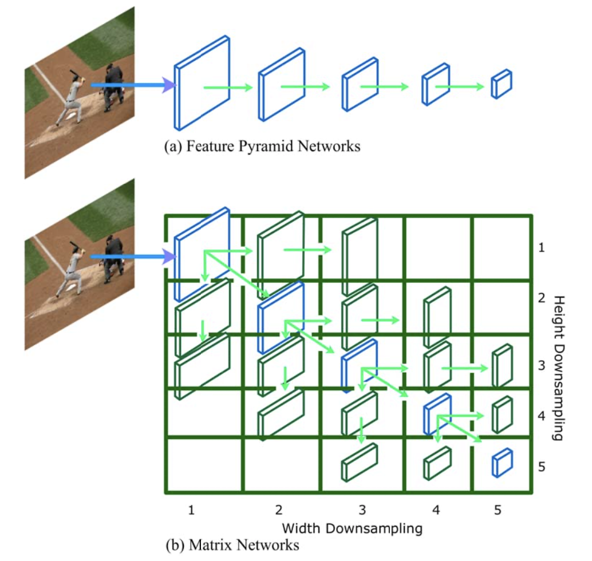
高度，宽度减半。左下右上剪枝(物体不常见)
性能提升不明显，相比CenterNet参数量减少
Ref: 参数少一半、速度快3倍：最新目标检测核心架构来了
Add localization confidence in NMS
可以看作一种精细化的前背景分类（soft）
使用分类置信度作为最开始选择框的依据，IoU用于计算分类置信度最大的框和其他框之间的重合度，删去框。
而IoU-Net使用预测的框和GT的重合IoU，即定位置信度，选择最大作为依据。在inference阶段发挥作用。

通过网络预测IoU：使用FPN作为骨干网络，提特征。使用PrRoI pooling替代RoI pooling

Rank all detection bbox on localization confidence.
选择IoU最大的框，其他框重叠大于thres的框只使用他的最大conf score作为IoU最大框的conf「根据IoU选择，最大score修正conf」

通过预测IoU并产生梯度，更新bounding box，并通过判断分数的提升和差值来更新边界框
// ToRead
使用双线性插值来连续化特征图，任意连续坐标(x,y)处都是连续的是插值系数，xy连续，ij为坐标像素点。RoI的一个bin表示为左上角和右下角的坐标对。通过二重积分进行池化（加权求和）

使用ResNet-FPN作为骨干网络，RoI pooling换成PrRoI pooling。同时IoU预测分支可以和R-CNN的分类和边界框回归分支并行工作.
Related 对于anchor生成/分配/选择的改进：Guided Anchoring, IoU-Net, MetaAnchor MetaAnchor - 简书
对于anchor和object的匹配方式的改进，Learn to match
之前采用IoU最大的anchor进行分配：细长物体，最representative的特征不在物体中心，IoU最大最representative
Assign策略需要满足：
Recall: 每个物体都能分配一个anchor
Precision: 区分background anchor
Compatible NMS: 高分类分数的anchor有好的localization
matching过程看作MLE过程，每个物体从bag of anchor中选likelihood probability最大的
训练损失函数，表示j anchor和i 物体匹配「assign using IoU criterion」
把训练损失函数看作似然概率
映射非常巧妙，使的损失映射到
，而且损失越小，
越大
因此，最小化损失的目标转换为最大化似然概率
目标 recall，precision，compatible
Recall：每个obj构建bag of anchor，最大化其中anchor的cls和loc似然。每个obj一定存在一个anchor对应
Precision：即对anchor区分前背景，把背景anchor分出
其中 表示anchor j不match任何物体。即anchor不match任何obj概率越高，anchor不属于背景的概率越低(1-)，才可以最大
Compatible: 表示j anchor匹配i obj概率，NMS按照cls分数选。所以改成loc分数「i j 的IoU」越大，匹配概率越高，P为关于IoU的saturated linear函数。步骤存在于
中
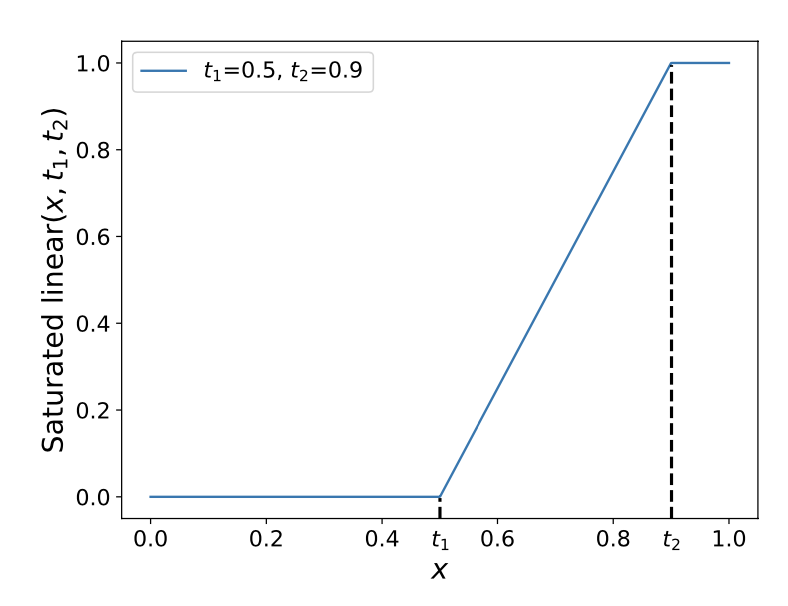
横坐标为IoU
似然函数: Jointly maximize
训练损失，使用FocalLoss
其中有max操作，但随机初始化的网络，所有anchor得分都低，max没有意义
改用Mean-max函数：
训练不充分时接近mean，使用bag中所有anchor训练
训练充分时接近max，选择最好的anchor训练
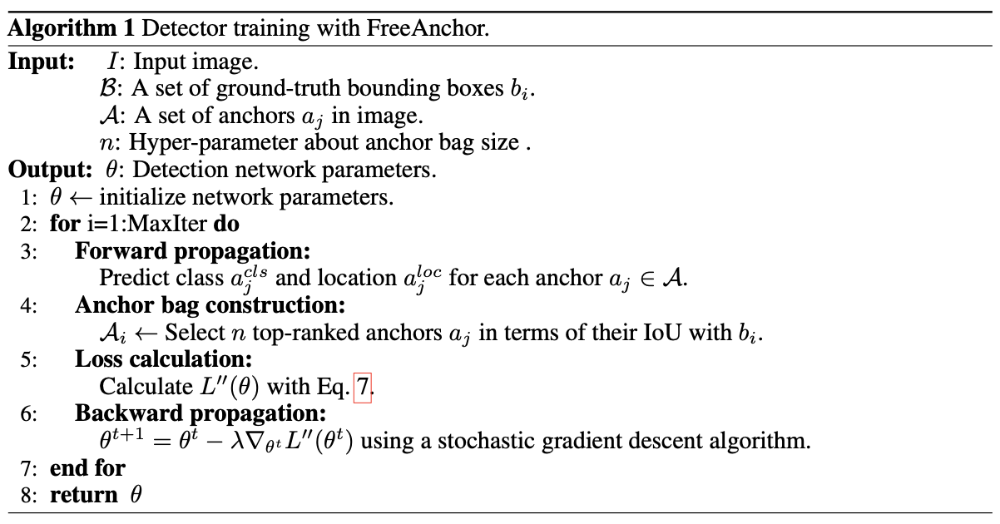
可视化，anchor assign confident (laptop)
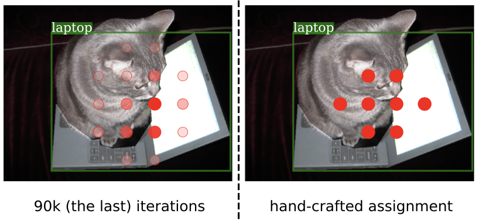
相比baseline有提升3%. 使用ResNeXt-64x4d-101，**为multi-scale
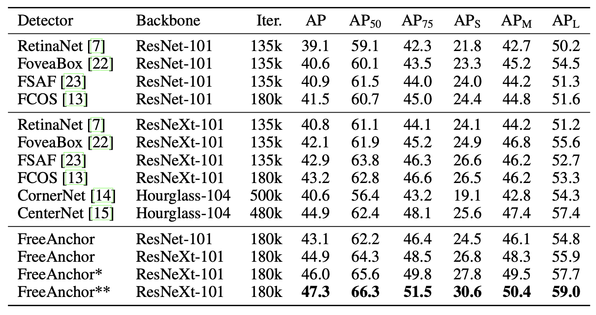
Ref: https://www.aminer.cn/research_report/5dedbde4af66005a4482453f?download=false
Paper: Benchmark for Generic Product Detection: A strong baseline for Dense Object Detection
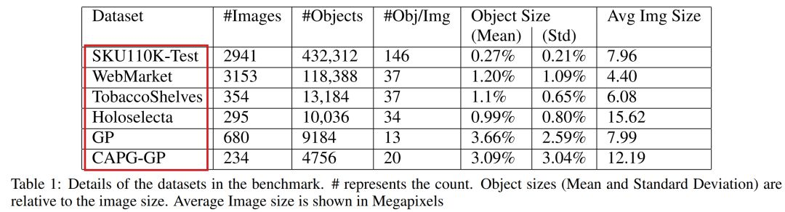
Scale Match for Tiny Person Detection [method+dataset]
所有FPN都使用backbone的多层特征图（经过1x1卷积）👇
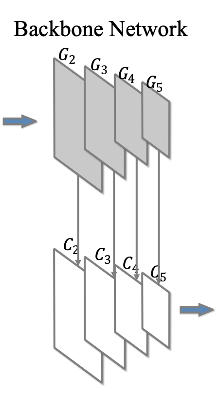
经典FPN，从最高层特征(semantic，low-res)经过upsample，和各同一级的特征图相加
给底层特征引入高层语义信息，益于小目标检测（低层特征图）
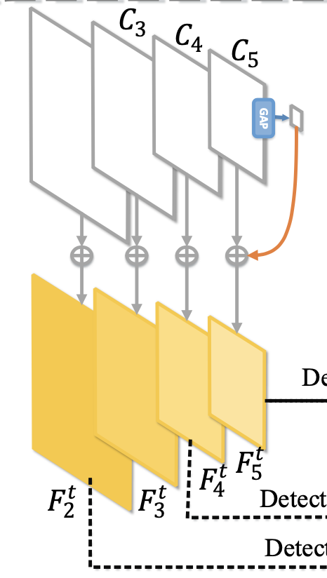
公式
从最底层(high-res)向上逐次产生FPN层，向高层特征图传播低层的空间细节信息(spatial)
从低到高，融合「本层特征，高一层特征，上一层FPN」

公式
downsample,
upsample
上述两个FPN顺序逐次产生，先产生的层会对之后层影响(unfair)
首先分组fuse高层和低层的临近两组特征
然后merge高层和低层的特征
再split产生不同层的特征
Ref: MFPN: A NOVEL MIXTURE FEATURE PYRAMID NETWORK OF MULTIPLE
ARCHITECTURES FOR OBJECT DETECTION
数据增强，通过搜索来combine transformations
数据增强角度：1. Learn a generator to create data 2. Learn a set of transformations applied to existing data(本文)
常用transformer：image mirror，multi-scale training，crop-and-erase (occlude)，cut-and-paste
自动学习数据集对应的数据增强方式：AutoAugment
Policy search问题：K=5个sub-policies，每个包含N=2个操作。训练时随机选择sub-policy，顺序执行N。
操作两个参数「执行操作的概率，操作大小程度」👇


equalize, contrast brightnessrotate, ShearX, TranslationYBBox_Only_Equalize, BBox_Only_Rotate, BBox_Only_FlipLRRotate 旋转图片和bbox（best）
Equalize 直方图均衡化(Histogram equalization)，平衡不同灰度像素出现概率，增大对比度👇
BBox_Only_TranslateY bbox内垂直变换，上下翻转

分格子(grids)，每个格子只预测规定数量bbox，只有当gt box的中心点落入grid内时，此grid负责预测这个gt。(潜在问题：密集物体，多个中心点落入同一个grid，漏检)
网络输出(x,y,w,h), box_confidence_score，表示normalized长宽和中心点offset，以及置信度「表示objectness和位置准确性」

分grid每个grid产生k个预测
保留高box_conf_score预测
其中，
class confidence score:
表示分类和回归的准确率
网络结构👆：下采样+全连接回归预测
Loss function：包括分类损失，位置损失，objectness （grids,
bbox each grids ）
Classification loss：类别，cond_cls_prob
Localization loss：只计算匹配了gt的grid
where 表示grid i的第j个box负责预测物体，预测根号来使大小物体误差值对loss函数贡献不同「见平方根函数，x小增长快，x大增长慢。小值误差增长快，大值误差增长慢」
Confidence loss：objectness，区分前背景，使用即
计算
和
采用NMS去掉重复框
没有RPN可以让网络获得更多context，利于分类(fewer false pos.)
BN，高分辨率 (224x224上pretrain backbone，448x448上finetune)
anchor box，对grid内B个box增加先验知识，规定初始scale和shape，focus on a specific shape，训练更稳定 👇从左到右
Anchor机制通过预定义scale和shape来引入先验知识，bbox has strong patterns

去掉FC层，使用1x1 conv改变通道为7x7x((4+1+20)x5)，grid内5个anchor

特征图奇数分辨率：大物体处于图片中心，奇数更好分which grid
去掉pooling
anchor聚类确定predefined scale&shape（👇数据点之间距离表示IoU大小，位置无意义）每类anchor配置看作一个cluster
预测offset [tx, ty, tw, th]减少网络预测取值范围，增大可表示的数值范围👇

增加passthrough，类似skip-connection。和浅层特征图concat预测小目标
Multi-Scale Training采用多个尺度训练适应尺度变化 320x320, 352x352,..., 608x608 10个batch的不同尺度图片训练
使用DarkNet作为backbone👇

使用hierarichical classification训练yolo，使用WordTree将分类和检测数据集混合训练，分9418类
Multi-label classification：输出一个label id而不是cat维向量，直接输出exclusive output，使用binary cross-entropy loss训练
每个目标只匹配一个anchor，没有匹配的anchor不计算cls和loc损失，只计算objectness
FPN：在3个尺度的特征图上预测，每个grid预测3个anchor，一共9种anchor配置
Residual+DarkNet53：卷积增加skip-connection
FPN

Ref: https://medium.com/@jonathan_hui/real-time-object-detection-with-yolo-yolov2-28b1b93e2088
https://blog.csdn.net/leviopku/article/details/82660381
评价预测和gt的距离，回归目标。具有尺度不变形
训练
问题：
没有重叠时 IoU=0，没有梯度无法用IoU loss训练
无法很好反映方向不一致时重叠
其中为包含A和B的最小凸多边形(enclosing convex)，多为矩形
A和B不重合时也可以优化，范围，不重合时为负数(provide moving direction)
关注形状之间缝隙减小，如👆2,3中缝隙导致GIoU更小
👆<font color="#00dd00">不重叠样本</font>，IoU=0，而GIoU为负值，有梯度
👆<font color="#666600">重叠样本</font>，不断优化过程中GIoUIoU
使用IoU Loss 或
训练，相比Sommoth-L1和MSE能带来性能提升
好的bounding box regres. 标准需要考虑三个因素：Overlap, Center Distance, Aspect Ratio
直接优化两个框中心点的距离
其中 (or 图中
)表示中心点的欧式距离（L1可以吗？），
表示包含两个框的最小闭包区域的对角线距离👇
相比GIoU：GIoU更强调对齐，只要对齐之后没有梯度，如👇，预测蓝色框和GT绿色对齐，没有缝隙，GIoU term=0「一框包括另一的情况」
而DIoU直接优化框中心的重合，距离近👇
👆IoU不重叠loss高，GIoU正垂直水平方向loss高（如👆👆👆图），DIoU较低
DIoU也可用于NMS中DIoU-NMS
使用各种IoU loss训练👇
在线匹配，先回归出框，再anchor-target匹配计算loss
👆anchor大，每个人脸匹配到的数量变多，但是匹配到人脸占所有人脸中占比下降，人脸recall下降
👆anchor小，每个人脸匹配到的anchor数量下降，但是大多数人脸都有匹配anchor，人脸recall上升
👆0.35为anchor和target match的threshold，所以89%的anchor都没有被match
==关键== 纵坐标代表face数量
match 1个anchor的face有2492张，anchor能产生的正确预测框（IoU>0.5，Correctly Predicted Bounding Box）对应的人脸有1968张 大多数人脸都能通过anchor产生一个IoU高的预测框
预测框经过NMS之后能保留下来的人脸只有343张 大多数人脸经过anchor产生的预测框都被NMS过滤掉，而导致这些face漏检
但是NMS只删除一个位置重复的框(IoU过大)，对于漏检的人脸，只要有框cover，就一定会保留，NMS后同一个位置至少保留一个score最大的框 NMS后导致漏检的1625张face，产生了CPBB(
IoU>0.5)，但是NMS被删掉 IoU足够大，但是得分太低（低于
cls_threshold)，NMS时过低score的忽略掉(不会考虑IoU) 是由于训练的时候此anchor没有match，分类分支训练目标为BG，分类网络降低了score「本质为IoU和score的mismatch」
👆结论：低IoU而没有被match的anchor也能产生很好的预测框(CPBB)，需要被match为物体，提高其分类score。这些anchor负责的face多为outer face(难样例)，上述也为outer face漏检的原因（低IoU框被unmatch，无法训练，分类网络不能分类为高分）
选择大anchor，通过OHAM来进行弥补没有anchor match的face
传统match策略：一个face/target首先match所有和它IoU大于threshold的anchor。此后，对于没有anchor和它IoU高于阈值的face，选择和它IoU最大的anchor匹配进行补充（only one）
OHAM：1) match所有anchor IoU大于threshold的face，对于没有anchor匹配的face，不进行compensate. 2) 对所有框回归计算bbox. 3) 对所有没有匹配anchor的face，计算预测框和face的IoU，对其进行弥补， 「没有匹配或匹配数量不足 (K anchor bag)」
计算Loss学习时，使用回归后的bbox和target匹配，来弥补用原始anchor和target匹配的数量不足问题
其中表示弥补的anchor，
为数量，p预测label，g=gt
为matched anchor和unmatched low-quality (IoU<0.5) anchor「即unmatched hq anchor不进行训练，应该hq仍未被match表示简单样例上多余(>K)的anchor」，
为数量，
表示IoU，
表示第一次match的label
不同感受野，对应不同扩张(dilation)
不是多尺度的特征图，而是不同感受野大小的特征图
之前只变感受野(receptive field/kernel size)，或者只变扩张尺度(ASPP)
RFB提出感受野和扩张尺度应该同时变化「相互影响」
👇圈只表示感受野大小，大的kernel对应大的dilate，使感受野更大
实现上
使用两个3x3代替5x5。注意padding，所有都为same size(k=3, p=1)，每个分支产生的特征图大小相同
self.branch0 = nn.Sequential(
Conv(in_planes, 2*inter_planes, kernel_size=1, stride=stride),
Conv(2*inter_planes, 2*inter_planes, kernel_size=3, stride=1, padding=visual, dilation=visual, relu=False)
)
self.branch1 = nn.Sequential(
Conv(in_planes, inter_planes, kernel_size=1, stride=1),
Conv(inter_planes, 2*inter_planes, kernel_size=(3,3), stride=stride, padding=(1,1)),
Conv(2*inter_planes, 2*inter_planes, kernel_size=3, stride=1, padding=visual+1, dilation=visual+1, relu=False)
)
self.branch2 = nn.Sequential(
Conv(in_planes, inter_planes, kernel_size=1, stride=1),
Conv(inter_planes, (inter_planes//2)*3, kernel_size=3, stride=1, padding=1),
Conv((inter_planes//2)*3, 2*inter_planes, kernel_size=3, stride=stride, padding=1),
Conv(2*inter_planes, 2*inter_planes, kernel_size=3, stride=1, padding=2*visual+1, dilation=2*visual+1, relu=False)
)
多尺度特征图融合
特征首先经过resize，再融合。resize可使用deconv/conv, 插值/pooling
Where , etc
and ,
,
computed (
1x1 conv) from ,
,
respectively
可以看作产生一个框feature pyramid多个特征图都用到，之前只用一个特征图产生一个框
训练tricks：mixup algorithm, cos lr, sync bn, bag of freebies
Objectness-aware object detection, 产生FG/BG的mask，只对mask区域计算
图片只有小部分有物体，背景区域不需要特征提取计算，只对前景mask区域计算特征，分类&回归(次要)出bbox
OMG网络为Fast-SCNN👇
使用element-wise mul来zero-out背景的feature map
OMG中有argmax操作，为了end2end training，可以1) 使用soft-argmax代替argmax训练 2) 使用surrogate gradient，FP使用argmax，BP时使用soft-argmax代替获得近似梯度
实验： 对比MAC，使用不同mask监督
训练方式，不平衡问题：hard example IoU分布不平衡，multi-level/res feature融合不平衡，不同loss样本产生的梯度不平衡
有梯度反推loss函数设计
目标检测器训练目标：
常见训练有三层次的imbalance
根据样本和GT的IoU，分成多个bin，每个bin均匀采样
第k bin中每个样本采样概率
样本各IoU均匀分布
使用同样深的网络来处理不同层的特征
resize不同层feature，取平均；使用Gaussian non-local attention增强融合的特征。在resize会原先的尺度增强multi-scale特征👇
==从梯度的角度考虑== promoting the crucial gradient: 精确的样本(inlier)的梯度更重要，增强loss小的样本的梯度(正确的梯度，数量少要增强)，减弱loss大样本的梯度(难训练，大梯度导致训练不稳定)👇
👆增强小loss的梯度，大loss的梯度clip。大小loss样本产生的梯度平衡
，通过分析梯度，反推回loss设计
积分可得👇
其中为GT和pred的bbox坐标差距，
为clip界 (大于
，梯度恒定为1)，
控制对小loss的梯度增强，
为平衡项，求出每个位置loss后mean或sum，即
👇
Bbox特征不对齐问题，提供更好的object表示方法(不是中心点领域卷积)
Deformable conv升级版，Representative Points
相比deformable，直接使用变形后的结果作为预测的bbox位置（or anchor的偏移），而不是explicit回归xywh。中心点 + implicit-offsets + wh
采样点同时用来提取语义对齐的特征，又用来表示物体的几何形态
大部分为背景，需要选择更representative的点求特征
👆训练：分类网络采用deformable conv即可，回归网络先把reppoints表示转为bbox表示(pseudo box)，然后计算和GT的offset（point loss）
转换方式：1) RepPoint set坐标最值 2) subset坐标最值 3) 使用mean和deviation估计，估计中心点，
估计尺度(wh)
👆使用网络计算偏移量(offsets over the center points)，得到reppoint的点/物体特征表示，n个点特征表示sample points/object的特征。学习
👆维护两个RepPoint set，二次refine
Learned via weak localization supervision from rectangular ground-truth boxes and implicit recognition feedback
使用基于中心点xy而不是xywh预测bbox，减少hypothesis space，一次只需要预测2D vec，更好训练
👆backbone FPN (多尺度即可解决基于点预测的重合物体问题，同FCOS)
👆两个分支：locate分支两次计算offset refine，class分支用offset变型卷积（dconv=deformable conv）
Ref: https://www.zhihu.com/question/322372759/answer/798327725
分类任务预训练和检测任务gap，feature pyramid融合
Light-weight Scratch Network产生准确底层特征输入FPN
底层特征高层特征双向传播
输入为downsample后的原始图片，低分辨率浅层网络 train from scratch
Bottom-up Scheme👆👆(b)：
为LSN的特征输出，
为SSD (baseline)的输出，
为上一层特征，cascade依次计算
Top-down Scheme👆👆(c)：
为
1x1conv降通道，为
1x1 conv融合特征，dense融合所有上层特征(low-res)，为
upsample
先经过bottom-up再top-down，用top-down输出预测

一个anchor/候选框负责预测多个物体。anchor-GT 一对多
密集行人检测。密集，重叠/遮挡
之前：一个anchor负责预测一个物体；提出：一个anchor预测一组
对于一个anchor/prior/proposal ，预测的GT：
预测为set：，
表示第
个anchor预测的第
个框的类别和置信度，
为位置
匹配时个物体，但预测时仍可能部分预测结果为背景「至多预测
个结果」 是否可以扩展为预测更多？
训练看作最小化预测集和GT集之间的推土机距离 ，和集合中位置无关，与分布有关
预测的背景box计算不计算
两个分布间距离：从一个分布变化到另一个分布所需要的最小做功
Ref: https://jeremykun.com/2018/03/05/earthmover-distance/, https://zxth93.github.io/2017/09/27/KL散度JS散度Wasserstein距离, https://zhuanlan.zhihu.com/p/74075915
一个anchor预测的多个物体是unique的，重复预测只可能出现在不同anchor预测集之间
NMS时增加：如果两个pred-box出自同一个anchor，则不进行抑制
FPN，增加RoIAlign
更多预测，可能出现更多False positive，可增加Refinement Module进行二次预测refine
Cityperson, CrowdHuman效果好
FPN改进，特征融合
不同尺度的特征图有semantic gap，增加一个监督信号来限制学习到的特征的差异
增加多个共享权重的预测头(detect head)对不同尺度特征图()上的proposal进行预测，加监督信号「multi-head prediction」
其中表示中间层的预测，
表示最终层的预测，
表示GT的label和box
最高层特征没有上层特征与其融合。采用不同尺度的特征进行组合得到
，并融合到
中，来增强最高层特征
Ratio-invariant Adaptive Pooling为把 pooling到不同尺度
其中Adaptive Spatial Fusion为
two RoIs with similar sizes may be assigned to different levels
使用ASF对多层特征进行加权融合，作为RoI的特征
融合为了使anchor-feature的匹配不只是一对一，临近尺度的特征图也参与预测，一个样本学习信号也传到多个尺度特征图
密集检测，embeding+NMS (类似feature NMS)，cascade
密集检测中不同类物体的区分和同一类不同物体的区分
增加将检测框映射到隐空间中 ，其中
即为检测框
，
为语义嵌入向量。可以看作将位置信息以语义信息作为权重进行线性变换得到embed
box和GT匹配时，对每个proposal ，选择最大IoU的物体
，如果i和j的IoU大于阈值，则认为i proposal匹配到j物体。Select max then thresholding
损失函数增加 1. Group：proposal的embed和匹配的物体的embed距离尽可能小 2. Sep：proposal的embed和与其第二大IoU的物体的embed距离增大（第一大的obj: 距离减小，第二大的obj: 距离增大）
NMS时，IoU小于阈值的保留(Greedy)，大于阈值的计算embed的距离(SG)，embed距离大于
的保留，
，IoU大的两个物体需要有更大的embed距离
由于FPN作为backbone有多层，在FPN的每一层进行Greedy+SG NMS。在不同层之间只进行Greedy-NMS，且一个box只会被FPN其他层的box抑制
分类分支和SG计算分支在回归分支之后cascade进行。直接使用refined-box而不是RoI/proposal进行特征提取，可以使用更高的IoU阈值来训练分类分支
分类分支辨别回归分支回归的refined-box属于类别/BG。随着回归分支能力增强，BG类别样本数量减少，需要hard negative mining。在refined-box上增加随机噪声输入分类分支，作为接近且低于IoU阈值的难负样本
所有分支都采用Position Sensitive RoI-Pooling👇，并增加self-attention👆
proposal/RoI区域内的每个位置有一个特征图，在对应特征图上RoI区域内pooling得到结果对应位置的响应值
Ref: https://zhuanlan.zhihu.com/p/30867916
相比densenet，只进行一次特征融合操作
轻量级网络平DenseNet性能（不明显 ）
VoVNetV2 增加残差连接和SE-block
动态选择卷积核，不是receptive field。类似空域和通道上的attention
空间的动态卷积核，卷积核区域间不同，区域内共享
传统卷积核：通道间不同，区域间完全相同（共享卷积核）
局部卷积：不同位置pixel卷积核不同
DRConv：不同区域卷积核不同，同一个区域内共享
首先学习划分区域mask，之后在每个区域内进行动态卷积
学习分区，学习卷积核在特征图上的分布
使用普通卷积计算特征图（kernel空域上相同，通道维不同），在特征图通道维选择最大的对应的卷积核作为该位置上使用的卷积核
，m个channel
选择通道维最大的kernel作为区域的kernel (同样大小不同参数)
由于argmax没有梯度(mask 是one-hot向量)，所以反向传播时使用softmax取代
根据输入特征动态产生每个区域的卷积核
类似通道+空域的attention机制（每个区域选择最大通道对应的卷积核）
性能提升1-2点 Mask-RCNN
按照beta分布融合两张图片训练，位置信息不变（geometry preserved）求loss时按照融合占比加权
Beta distribution
效果：解决 unprecedented scenes (如屋中大象) 和 very crowded object group，但可能会使置信度降低
分类头上使用，增加CE-Loss中错误label的梯度，防止模型too-confident & over-fitting
二阶段有proposal的剪裁不需要geometry transformation
采用cosine学习率，防止step scheduler剧烈变化不稳定
warm-up防止训练初期梯度爆炸
Batch-size 对性能影响大
model = apex.parallel.convert_syncbn_model(model)
Multi-scale training Image level pyramid
Multi-level/stage feature Feature pyramid
相比image pyramid，特征金字塔只提取一次图像特征，不同stage输出（多尺度），速度更快
Multi-scale training + Feature pyramid all in